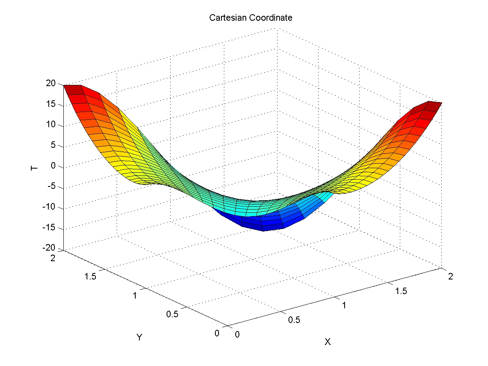
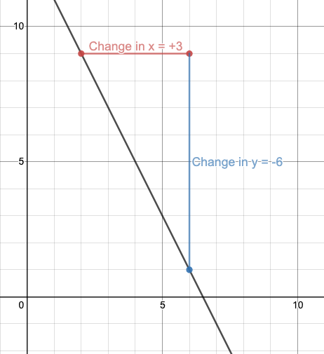
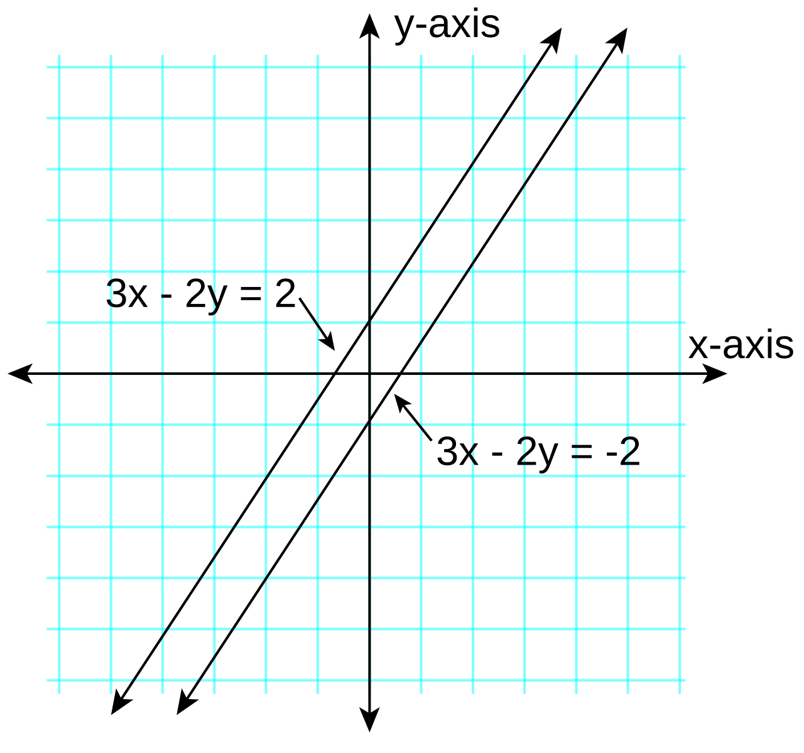
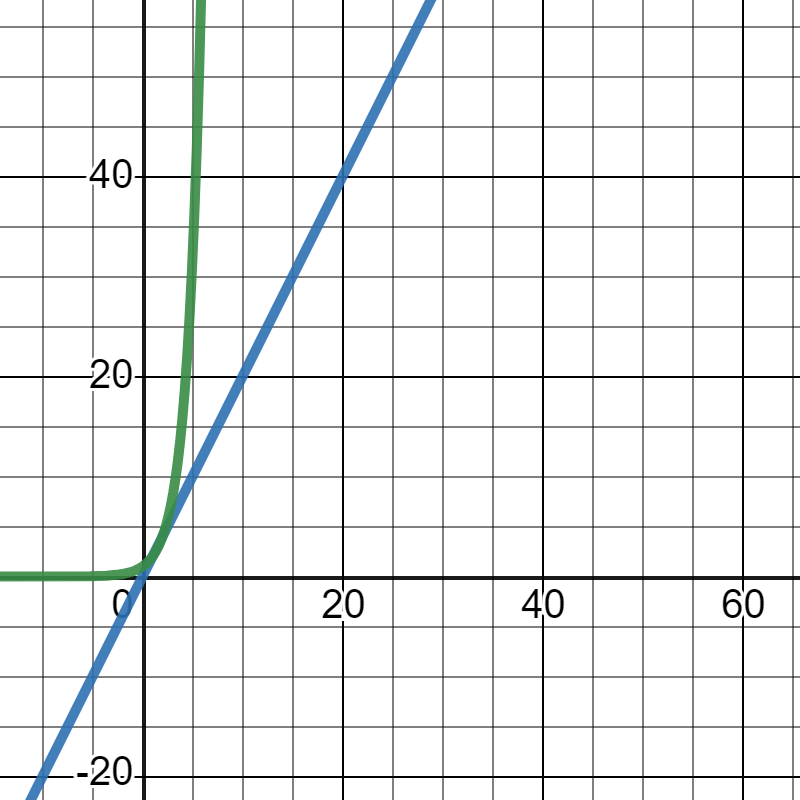

Graphs & Lines
Algebra stops being a pile of symbols the moment you can see it. A graph turns an equation into a picture, and the simplest, most useful picture in all of mathematics is a straight line. In this chapter you will learn to place a point on the plane, measure how steeply a line climbs or falls, write that line down in three interchangeable ways, recognize when two lines run side by side or cross at a perfect corner, and finally use a line to describe something real — a price, a distance, a rate. Every idea here is built from arithmetic you already own: subtraction, division, and the willingness to check your answer. If you have ever felt lost in a math class, this is a good place to get found, because almost everything is verifiable — you can plug your answer back in and watch it work.
By the end of this chapter you can
- Plot an ordered pair on the coordinate plane and name the quadrant it lands in.
- Find the x-intercept and y-intercept of a linear equation algebraically.
- Compute slope from two points and interpret it as a rate of change.
- Tell positive, negative, zero, and undefined slope apart, and write the equations of horizontal and vertical lines.
- Move fluently among slope-intercept, point-slope, and standard form.
- Write the equation of a line through two given points and check it.
- Use slope relationships to build lines parallel or perpendicular to a given line.
- Build a linear model from two data points and state what the slope and intercept mean in context, with units.
Section 1The coordinate plane

Two number lines, one address system
Take the number line you have known since grade school and lay it flat. Now take a second number line and stand it up, crossing the first at zero. That is the whole invention. The horizontal line is the x-axis, the vertical line is the y-axis, and the crossing point is the origin, written (0, 0). Together they form the Cartesian coordinate plane, named for René Descartes, and their only job is to give every point in the flat plane a unique two-number address.
That address is an ordered pair, written (x, y). The word ordered is doing real work: the first number is always the horizontal move and the second is always the vertical move. To plot (4, −3), start at the origin, walk 4 to the right because 4 is positive, then walk 3 down because −3 is negative, and put your dot there. To plot (−3, 4), start at the origin, walk 3 to the left, then 4 up. Those are two completely different points, which is exactly why the order matters.
A useful habit: say the moves out loud as you make them. "Four right, three down." Students who narrate the two moves make far fewer sign mistakes than students who try to eyeball it.
The four quadrants
The two axes chop the plane into four regions called quadrants, numbered with Roman numerals starting in the upper right and going counterclockwise. That counterclockwise direction is arbitrary but universal, so it is worth memorizing once. The quadrant a point lands in is determined entirely by the two signs in its address — you never have to look at a picture to know the answer.
| Quadrant | Where | Sign of x | Sign of y | Example point |
|---|---|---|---|---|
| I | Upper right | positive (+) | positive (+) | (3, 2) |
| II | Upper left | negative (−) | positive (+) | (−3, 2) |
| III | Lower left | negative (−) | negative (−) | (−3, −2) |
| IV | Lower right | positive (+) | negative (−) | (3, −2) |
| None | On an axis | x = 0 or y = 0 | (0, 5), (−4, 0), (0, 0) | |
Notice that last row. A point sitting on an axis is not in any quadrant — the axes are the fences between the yards, not part of any yard. So (0, 5) is on the y-axis, (−4, 0) is on the x-axis, and the origin is on both. Test questions love this.
Intercepts: where a graph meets the axes
An intercept is a point where a graph crosses an axis, and the two kinds are defined by a single fact each. The x-intercept is where the graph crosses the x-axis, and every point on the x-axis has y = 0. The y-intercept is where the graph crosses the y-axis, and every point on the y-axis has x = 0. That gives you a recipe with no memorization required:
- To find the x-intercept, set y = 0 and solve for x.
- To find the y-intercept, set x = 0 and solve for y.
Fully worked example. Find both intercepts of 2x + 5y = 20, and use them to graph the line.
Step 1 — find the x-intercept by setting y = 0.
- 2x + 5y = 20 → 2x + 5(0) = 20
- 5(0) = 0, so the equation becomes 2x + 0 = 20, that is 2x = 20
- Divide both sides by 2: (2x)/(2) = (20)/(2), so x = 10
- The x-intercept is the point (10, 0).
Step 2 — find the y-intercept by setting x = 0.
- 2(0) + 5y = 20
- 2(0) = 0, so 0 + 5y = 20, that is 5y = 20
- Divide both sides by 5: (5y)/(5) = (20)/(5), so y = 4
- The y-intercept is the point (0, 4).
Step 3 — check both answers by substituting them back into the original equation.
- Check (10, 0): 2(10) + 5(0) = 20 + 0 = 20. True. ✓
- Check (0, 4): 2(0) + 5(4) = 0 + 20 = 20. True. ✓
Step 4 — graph. Plot (10, 0) and (0, 4), lay a straightedge across them, and draw. Two points determine a line, so an intercept pair is often the fastest possible graph. A third point is a cheap insurance policy: try x = 5, which gives 2(5) + 5y = 20 → 10 + 5y = 20 → 5y = 10 → y = 2, so (5, 2) should land right on your line — and it does, exactly halfway between the intercepts.
- An ordered pair (x, y) is horizontal move first, vertical move second — order is not optional.
- Quadrants run I, II, III, IV counterclockwise from the upper right; signs alone determine the quadrant.
- Points on an axis belong to no quadrant.
- x-intercept: set y = 0 and solve. y-intercept: set x = 0 and solve. Report each as a point.
Section 2Slope

What slope actually measures
Slope answers one question: when I move to the right, how fast does the line go up or down? It is a ratio — vertical change divided by horizontal change — and it is usually called rise over run. Rise is how far you climbed (negative if you fell). Run is how far you traveled sideways. Slope is written with the letter m, a convention with no good explanation that we are all stuck with.
Given any two distinct points (x1, y1) and (x2, y2) on a line:
m = (rise)/(run) = (y2 − y1)/(x2 − x1), provided x2 ≠ x1
That restriction — x2 ≠ x1 — is not decoration. If the two x-values are equal, the denominator is zero, and division by zero is undefined. We will see in a moment exactly what kind of line does that.
Two comforts. First, it does not matter which point you call "point 1." Swap them and both the top and the bottom flip sign, and the two negatives cancel. Second, it does not matter which two points on the line you pick — a straight line has the same steepness everywhere, which is precisely what makes it straight. Slope is the line's one defining number.
A fully worked slope calculation
Fully worked example. Find the slope of the line through (−3, 7) and (5, −1).
Step 1 — label the points so the substitution is mechanical.
- x1 = −3, y1 = 7 (the first point)
- x2 = 5, y2 = −1 (the second point)
Step 2 — substitute into the formula, writing the parentheses even when they look silly.
- m = (y2 − y1)/(x2 − x1) = (−1 − 7)/(5 − (−3))
Step 3 — do the top and the bottom separately, out loud.
- Top: −1 − 7 = −8. (Starting at −1 and subtracting 7 moves you further left on the number line.)
- Bottom: 5 − (−3) = 5 + 3 = 8. (Subtracting a negative is adding — this is the single most common place to slip.)
Step 4 — divide.
- m = (−8)/(8) = −1
Step 5 — check by reversing the labels. Call (5, −1) the first point instead:
- m = (7 − (−1))/(−3 − 5) = (7 + 1)/(−8) = (8)/(−8) = −1. Same answer. ✓
What it means. A slope of −1 says: every 1 unit you move right, the line drops 1 unit. It falls at a 45° angle.
One more, with a fraction that does not simplify to a whole number. Through (2, −5) and (6, 1):
- m = (1 − (−5))/(6 − 2) = (1 + 5)/(4) = (6)/(4) = (3)/(2)
Always reduce. A slope of (3)/(2) is a clean instruction: run 2 right, rise 3 up. Left as 6/4 it still works — run 4, rise 6 lands on the same line — but reduced is the standard form and the one graders expect.
Four kinds of slope
Every line falls into exactly one of four categories, and you should be able to name the category before you finish the arithmetic.
| Slope | Look of the line | Worked example | Equation type |
|---|---|---|---|
| Positive (m > 0) | Rises left to right (uphill) | (1, 2) & (4, 8): m = (8 − 2)/(4 − 1) = (6)/(3) = 2 | Slanted, e.g. y = 2x |
| Negative (m < 0) | Falls left to right (downhill) | (−3, 7) & (5, −1): m = (−8)/(8) = −1 | Slanted, e.g. y = −x + 4 |
| Zero (m = 0) | Perfectly flat — horizontal | (−4, 3) & (6, 3): m = (3 − 3)/(6 − (−4)) = (0)/(10) = 0 | y = 3 |
| Undefined | Straight up and down — vertical | (2, −1) & (2, 5): m = (5 − (−1))/(2 − 2) = (6)/(0) — undefined | x = 2 |
Study the last two rows side by side, because they are the pair that gets confused. Zero slope means the rise is zero — you moved sideways and never went up. That is a real number, zero, and the line is horizontal with equation y = (some number). Undefined slope means the run is zero — you went up without going sideways at all — and there is no number that equals 6 divided by 0. The line is vertical with equation x = (some number). "Zero" and "no slope" are not the same thing, and saying "no slope" out loud is how the confusion starts, so prefer the word undefined.
Slope as a rate of change
Outside of a graph, slope has a much more familiar name: a rate. Miles per hour, dollars per page, degrees per minute, milligrams per kilogram — every "per" you have ever said is a slope. The units tell you exactly what the number means: slope has units of (y-units) per (x-unit). If x is measured in hours and y in miles, a slope of 55 is 55 miles per hour. If x is pages and y is dollars, a slope of 0.18 is 18 cents per page. This is the bridge from Section 2 to Section 5, and it is the reason lines matter at all.
- m = (y2 − y1)/(x2 − x1), valid only when x2 ≠ x1.
- Order of the two points does not matter; consistency of order within the fraction does.
- Positive rises, negative falls, zero is horizontal (y = k), undefined is vertical (x = k).
- Slope is a rate of change: its units are always y-units per one x-unit.
Section 3Forms of a line

Three outfits, one line
A single line can be written in several algebraically equivalent ways. They describe the same set of points; they just make different information easy to read at a glance. Learning all three is not busywork — each one is the fastest tool for a particular job.
| Form | Looks like | What it hands you free | Best used when |
|---|---|---|---|
| Slope-intercept | y = mx + b | Slope m and y-intercept (0, b) | Graphing fast; comparing two lines |
| Point-slope | y − y1 = m(x − x1) | A point (x1, y1) and the slope | Building a line from a point and a slope |
| Standard | Ax + By = C | Both intercepts quickly; no fractions needed | Systems of equations; tidy final answers |
| Horizontal | y = k | Slope 0 | Flat lines (a special case of all three) |
| Vertical | x = k | Slope undefined | Vertical lines — cannot be written as y = mx + b |
In slope-intercept form, y = mx + b, the number multiplying x is the slope and the number standing alone is the y-value where the line crosses the y-axis. In y = −4x + 9, the slope is −4 and the y-intercept is (0, 9) — no work required. To graph it: put a dot at (0, 9), then use the slope −4 = (−4)/(1) to step 1 right and 4 down to (1, 5), and connect.
In standard form, Ax + By = C, both variables sit on the left and the constant sits alone on the right. By convention A, B, and C are integers with no common factor and A is non-negative. Standard form is where the intercept recipe from Section 1 shines, and it is the form vertical lines can live in (x = 2 is 1x + 0y = 2) even though slope-intercept form cannot hold them.
Point-slope: the workhorse
Point-slope form deserves special affection because it is the form you build with. Rearrange the slope formula: if (x, y) is any point on the line and (x1, y1) is a known point, then m = (y − y1)/(x − x1). Multiply both sides by (x − x1) and you get y − y1 = m(x − x1). That is it — point-slope form is just the slope formula with the denominator cleared. Whenever a problem gives you a point and a slope, or two points, start here.
Fully worked example. Write the equation of the line through (−2, 5) with slope (−3)/(4). Give it in point-slope, slope-intercept, and standard form.
Step 1 — write point-slope, substituting carefully. Here x1 = −2, y1 = 5, m = (−3)/(4).
- y − y1 = m(x − x1)
- y − 5 = (−3)/(4) · (x − (−2))
- Simplify the inside: x − (−2) = x + 2
- y − 5 = (−3)/(4) · (x + 2) ← point-slope form, done
Step 2 — distribute to reach slope-intercept form.
- (−3)/(4) · x = (−3x)/(4)
- (−3)/(4) · 2 = (−6)/(4) = (−3)/(2)
- So y − 5 = (−3x)/(4) − (3)/(2)
Step 3 — add 5 to both sides and combine the constants over a common denominator.
- y = (−3x)/(4) − (3)/(2) + 5
- Rewrite 5 as (10)/(2) so the fractions match: −(3)/(2) + (10)/(2) = (7)/(2)
- y = (−3)/(4) · x + (7)/(2) ← slope-intercept form. Slope (−3)/(4), y-intercept (0, (7)/(2)) = (0, 3.5)
Step 4 — clear the fractions to reach standard form. The denominators are 4 and 2, so multiply every term by 4.
- 4 · y = 4 · (−3x)/(4) + 4 · (7)/(2)
- 4y = −3x + 14
- Add 3x to both sides so A is positive: 3x + 4y = 14
- 3x + 4y = 14 ← standard form (integers, no common factor, A > 0)
Step 5 — check the original point in all three forms. Substitute x = −2 and see whether y comes out 5.
- Point-slope: y − 5 = (−3)/(4) · (−2 + 2) = (−3)/(4) · 0 = 0, so y = 5. ✓
- Slope-intercept: y = (−3)/(4) · (−2) + (7)/(2) = (6)/(4) + (7)/(2) = (3)/(2) + (7)/(2) = (10)/(2) = 5. ✓
- Standard: 3(−2) + 4(5) = −6 + 20 = 14. ✓
Three forms, one line, all verified.
Two points to an equation
If you are handed two points instead of a slope, you simply do Section 2 first and then Section 3. Nothing new is required.
Fully worked example. Find the equation of the line through (1, −2) and (4, 7).
- Step 1 — slope. m = (7 − (−2))/(4 − 1) = (7 + 2)/(3) = (9)/(3) = 3
- Step 2 — point-slope, using (1, −2). y − (−2) = 3(x − 1), which tidies to y + 2 = 3(x − 1)
- Step 3 — distribute. y + 2 = 3x − 3
- Step 4 — subtract 2 from both sides. y = 3x − 3 − 2 = 3x − 5
- Step 5 — check the point you did NOT use. At x = 4: y = 3(4) − 5 = 12 − 5 = 7. ✓ The line passes through (4, 7) as required.
Notice Step 5. Using the unused point as your check is free insurance: if the arithmetic had gone wrong anywhere, that substitution would have caught it. Had we started with (4, 7) instead, we would have gotten y − 7 = 3(x − 4) → y = 3x − 12 + 7 = 3x − 5 — the identical line. Either point works.
Reading slope out of standard form
Given 5x − 2y = 8, you cannot see the slope. Solve for y and it appears. One condition first: solving Ax + By = C for y requires dividing by B, so this move is legal only when B ≠ 0. If B = 0 the equation is Ax = C, a vertical line, which has no slope-intercept form at all. Here B = −2, so we are safe:
- Subtract 5x: −2y = −5x + 8
- Divide every term by −2: (−2y)/(−2) = (−5x)/(−2) + (8)/(−2)
- y = (5)/(2) · x − 4
- So m = (5)/(2) and the y-intercept is (0, −4).
The dangerous step is dividing by a negative: both the x-term and the constant change sign. Divide term by term, in writing, every time.
- y = mx + b displays the slope and y-intercept; y − y1 = m(x − x1) is built from a point and a slope; Ax + By = C is the tidy integer form.
- All three describe the same line; converting is pure algebra, and you can check by substituting a known point.
- To clear fractions into standard form, multiply every term by the common denominator.
- A vertical line x = k has no slope-intercept form at all.
Section 4Parallel and perpendicular lines

Parallel means equal slopes
Two lines are parallel when they never intersect, no matter how far you extend them. Since slope is the one number that controls direction, this happens exactly when the slopes match: m1 = m2. One caution — equal slopes and equal y-intercepts do not give you two parallel lines; they give you the same line drawn twice. For genuinely parallel lines you need equal slopes and different intercepts.
Perpendicular means negative reciprocal slopes
Two lines are perpendicular when they cross at a right angle (90°). The slope condition is:
m1 · m2 = −1, equivalently m2 = −1/m1 (provided m1 ≠ 0)
The condition m1 ≠ 0 on that second version is the same excluded-value habit from the slope formula: the reciprocal form divides by m1, so it says nothing at all when m1 = 0. That gap is exactly the horizontal-line case treated below.
In plain language: flip the fraction and change the sign. That is what "negative reciprocal" means, and doing it in two deliberate motions prevents the classic half-error of flipping without negating. If m1 = (2)/(3), flip to (3)/(2), then negate to get (−3)/(2). If m1 = −5, first write it as (−5)/(1), flip to (1)/(−5) = −(1)/(5), then negate to get (1)/(5). Confirm: (−5) · (1)/(5) = (−5)/(5) = −1. ✓
There is one honest exception. A horizontal line (m = 0) and a vertical line (slope undefined) clearly meet at a right angle, but you cannot multiply 0 by "undefined" and get −1. The product rule simply does not apply to that pair — they are perpendicular by geometry, not by arithmetic. Handle vertical and horizontal lines by picture, not by formula.
| Relationship | Slope rule | Given m1 = (2)/(3) | Given m1 = −4 |
|---|---|---|---|
| Parallel | m2 = m1 | m2 = (2)/(3) | m2 = −4 |
| Perpendicular | m2 = −1/m1 | m2 = (−3)/(2) | m2 = (1)/(4) |
| Neither | Slopes unequal and product ≠ −1 | e.g. m2 = 5 | e.g. m2 = 2 |
| Same line | Same m and same b | y = 2x + 1 and 4x − 2y = −2 are one line | |
| Horizontal & vertical | Perpendicular by geometry | y = 3 and x = −1 meet at a right angle; the product rule does not apply | |
A fully worked pair
Fully worked example. Line L has equation 2x − 3y = 12. Find (a) the line parallel to L through (6, −1) and (b) the line perpendicular to L through (6, −1). Give both in slope-intercept form.
Step 1 — get the slope of L by solving for y.
- 2x − 3y = 12
- Subtract 2x: −3y = −2x + 12
- Divide every term by −3: (−3y)/(−3) = (−2x)/(−3) + (12)/(−3)
- y = (2)/(3) · x − 4, so mL = (2)/(3)
Step 2(a) — the parallel line has the same slope, (2)/(3). Use point-slope with (6, −1):
- y − (−1) = (2)/(3) · (x − 6), that is y + 1 = (2)/(3) · (x − 6)
- Distribute: (2)/(3) · 6 = (12)/(3) = 4, so y + 1 = (2)/(3) · x − 4
- Subtract 1: y = (2)/(3) · x − 5
- Check the point: at x = 6, y = (2)/(3) · 6 − 5 = 4 − 5 = −1. ✓
- Check it is truly parallel: slope (2)/(3) matches L, and the intercept −5 differs from L's −4, so it is a different line. ✓
Step 2(b) — the perpendicular line uses the negative reciprocal. Flip (2)/(3) to (3)/(2), then negate: m⊥ = (−3)/(2).
- y + 1 = (−3)/(2) · (x − 6)
- Distribute: (−3)/(2) · (−6) = (18)/(2) = 9, so y + 1 = (−3)/(2) · x + 9
- Subtract 1: y = (−3)/(2) · x + 8
- Check the point: at x = 6, y = (−3)/(2) · 6 + 8 = −9 + 8 = −1. ✓
- Check the right angle: (2)/(3) · (−3)/(2) = (−6)/(6) = −1. ✓
Deciding a relationship. To classify two given lines, put both into slope-intercept form and compare. Are 3x − 4y = 20 and y = (3)/(4) · x − 2 parallel? Solve the first: −4y = −3x + 20 → y = (3)/(4) · x − 5. Both slopes are (3)/(4); the intercepts −5 and −2 differ. Parallel.
- Parallel: equal slopes, different y-intercepts. Equal slopes and equal intercepts means it is the same line.
- Perpendicular: m1 · m2 = −1 — flip the fraction, then change the sign.
- Convert both equations to y = mx + b before comparing; slopes hide in standard form.
- Horizontal and vertical lines are perpendicular by geometry; the product rule cannot be applied to an undefined slope.
Section 5Modeling with linear equations

When is a line the right model?
A linear model is appropriate whenever a quantity changes by the same amount in every equal step: the same dollars per page, the same gallons per minute, the same degrees per hour. That constant step is the slope. If instead a quantity keeps multiplying — doubling, or growing by a fixed percentage — a line is the wrong tool and you need the curves of later chapters. Before you fit a line, ask: is the change constant, or is it compounding?
Two habits separate a model from a bare equation. First, name your variables with units: not "x" but "p = number of pages printed." Second, say the slope and intercept in a sentence. A model that you cannot explain in English has not been finished.
Building a model from two data points
Fully worked example. A print shop charges a one-time setup fee plus a fixed cost per page. A 100-page order costs $23. A 400-page order costs $77. Write a linear model for the cost, interpret it, and use it to price a 250-page order.
Step 1 — define the variables, with units.
- p = number of pages printed (the input, so it goes on the horizontal axis)
- C = total cost in dollars (the output)
- The two facts become the ordered pairs (100, 23) and (400, 77).
Step 2 — find the slope, which is the cost per page.
- m = (77 − 23)/(400 − 100)
- Top: 77 − 23 = 54 dollars
- Bottom: 400 − 100 = 300 pages
- m = (54)/(300) = (54 ÷ 6)/(300 ÷ 6) = (9)/(50) = 0.18
- Units: dollars per page. So each page costs $0.18, or 18 cents.
Step 3 — use point-slope with either data point. We will use (100, 23).
- C − 23 = 0.18(p − 100)
- Distribute: 0.18 · 100 = 18, so C − 23 = 0.18p − 18
- Add 23 to both sides: C = 0.18p − 18 + 23
- −18 + 23 = 5
- C = 0.18p + 5
Step 4 — check with the data point we did not use.
- At p = 400: C = 0.18(400) + 5 = 72 + 5 = 77. Matches the given $77. ✓
Step 5 — interpret in plain English (this is the actual point of the exercise).
- Slope 0.18: every additional page adds $0.18 to the bill. Cost rises 18 cents per page.
- y-intercept 5: at p = 0 pages the cost is $5. That is the setup fee — what you pay just to walk in the door before a single page prints.
Step 6 — use the model to predict. Price a 250-page order:
- C = 0.18(250) + 5
- 0.18 · 250 = 45
- C = 45 + 5 = $50.00
Step 7 — state the restriction. Pages cannot be negative, so the model is only meaningful for p ≥ 0, and in practice p should be a whole number. Plugging in p = −20 produces a number, but not a meaning.
| Piece of C = 0.18p + 5 | Algebra name | Meaning in this context | Units |
|---|---|---|---|
| p | Independent variable | Pages ordered — what you control | pages |
| C | Dependent variable | Total charge — what results | dollars |
| 0.18 | Slope | Cost added per additional page | dollars per page |
| 5 | y-intercept | Flat setup fee, paid at zero pages | dollars |
| p ≥ 0 | Domain restriction | You cannot order negative pages | — |
Reading a model that is handed to you
Half of modeling is interpretation, not construction. Suppose a tank is draining and the volume of water is V = 500 − 12t, where V is gallons and t is minutes. Rewrite it mentally as V = −12t + 500 so the shape is familiar.
- Slope −12: the tank loses 12 gallons every minute. Negative slope means the quantity is decreasing — the sign carries meaning.
- Intercept 500: at t = 0, V = −12(0) + 500 = 500 gallons. The tank started full at 500 gallons.
- When is it empty? Set V = 0: 0 = 500 − 12t → 12t = 500 → t = (500)/(12) = (125)/(3) ≈ 41.7 minutes.
- Check: at t = (125)/(3), V = 500 − 12 · (125)/(3) = 500 − (1500)/(3) = 500 − 500 = 0. ✓
- Restriction: the model is meaningful only for 0 ≤ t ≤ (125)/(3). After that the tank is empty; the equation would report negative gallons, which is nonsense.
That last bullet is worth a moment. Predicting inside the range of your data is interpolation and is usually safe. Predicting outside it is extrapolation, and it is where linear models go to embarrass people. Our print-shop model happily reports a price for a one-million-page order; the actual shop would give you a bulk discount, and the line would be wrong. A model is a description of a range, not a law of nature.
Average rate of change
When data are not perfectly linear, the slope between two data points still has a name: the average rate of change over that interval. If a cooling cup of coffee measures 186°F at minute 2 and 174°F at minute 8, the average rate of change is (174 − 186)/(8 − 2) = (−12)/(6) = −2 degrees per minute. The coffee did not necessarily drop exactly 2 degrees in every single minute — but on average, over that span, that is the trend. Same formula, humbler claim.
- Use a linear model when the change per equal step is constant.
- Two data points → slope → point-slope → simplify. Then check with the point you did not use.
- The slope is a rate (y-units per x-unit); the y-intercept is the starting value at x = 0.
- State the domain restriction, and distrust extrapolation far outside the data.
The chapter in one breath
- The coordinate plane gives every point a two-number address (x, y): horizontal first, vertical second, quadrants I–IV counterclockwise from the upper right.
- Intercepts come from a one-line recipe — set y = 0 for the x-intercept, set x = 0 for the y-intercept — and are reported as points.
- Slope is m = (y2 − y1)/(x2 − x1) with x2 ≠ x1; it is rise over run and it is the line's one defining number.
- Positive slope rises, negative falls, zero is horizontal (y = k), and undefined is vertical (x = k) — zero and undefined are not the same thing.
- One line, three outfits: slope-intercept y = mx + b, point-slope y − y1 = m(x − x1), and standard Ax + By = C; point-slope is the one you build with.
- Parallel lines have equal slopes and different intercepts; perpendicular lines have slopes whose product is −1 — flip the fraction and change the sign.
- A linear model fits any constant-rate situation: two data points give the slope, point-slope gives the equation, and the check uses the unused point.
- Interpretation is the job: the slope is a rate with units, the y-intercept is the starting value, and every model carries a domain restriction beyond which extrapolation is unreliable.
ReferenceWords worth knowing
A quick reference for the vocabulary in this chapter — skim it now, and circle back whenever a word slows you down mid-problem.
- Average rate of change
- The slope between two data points, (y2 − y1)/(x2 − x1), describing the typical change per unit over that interval even when the data are not perfectly linear.
- Cartesian coordinate system
- The grid formed by a horizontal x-axis and a vertical y-axis crossing at the origin, giving every point an address (x, y).
- Collinear
- Lying on the same straight line. Three points are collinear exactly when the slope between any two pairs of them is the same.
- Extrapolation
- Using a model to predict outside the range of the data it was built from — possible, but unreliable, and the usual source of absurd predictions.
- Horizontal line
- A flat line with slope 0 and equation y = k; every point on it shares the same y-value.
- Intercept
- A point where a graph crosses an axis. Always reported as an ordered pair, never as a lone number.
- Interpolation
- Using a model to estimate a value inside the range of the data it was built from — generally the safer kind of prediction.
- Linear equation in two variables
- An equation whose graph is a straight line; it can always be written as Ax + By = C with A and B not both zero.
- Negative reciprocal
- The result of flipping a fraction and changing its sign; the negative reciprocal of (2)/(3) is (−3)/(2). Perpendicular slopes are negative reciprocals of each other.
- Ordered pair
- A point written (x, y), where the first entry is the horizontal position and the second is the vertical position.
- Origin
- The point (0, 0), where the two axes cross.
- Parallel lines
- Lines that never intersect; they have equal slopes and different y-intercepts.
- Perpendicular lines
- Lines that cross at a 90° angle; their slopes multiply to −1 (with horizontal-and-vertical pairs as the geometric exception).
- Point-slope form
- y − y1 = m(x − x1) — the form built directly from one known point and the slope.
- Quadrant
- One of the four regions the axes divide the plane into, numbered I through IV counterclockwise from the upper right. Points on an axis are in no quadrant.
- Rise and run
- The vertical change (rise) and horizontal change (run) between two points; their quotient is the slope.
- Slope
- The constant rate at which a line rises or falls, m = (y2 − y1)/(x2 − x1), defined only when x2 ≠ x1.
- Slope-intercept form
- y = mx + b, where m is the slope and (0, b) is the y-intercept.
- Standard form of a line
- Ax + By = C, conventionally with integer coefficients, no common factor, and A non-negative.
- Undefined slope
- What happens when the run is zero and the slope formula would divide by zero; the line is vertical. Not the same as zero slope.
- x-intercept
- The point where a graph crosses the x-axis, found by setting y = 0 and solving; it has the form (a, 0).
- y-intercept
- The point where a graph crosses the y-axis, found by setting x = 0 and solving; it has the form (0, b).